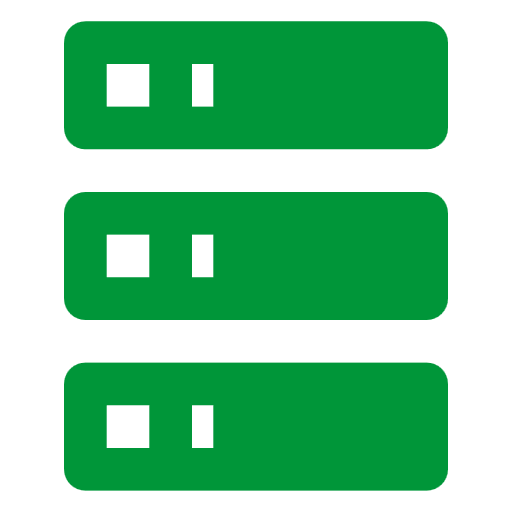

Repositories
Everybody has a testing environment. Some people are lucky enough enough to have a totally separate environment to run production in.
docker-traefik
My Docker setup with Traefik, Authelia and a bunch of other applications.
hass-afvalhulp
Home Assistant integration for Afvalhulp, used by various Dutch municipalities for trash pickup.
hass-automations
Various Home Assistant automations using templates and triggers for smarter notifications.

nginx-configs
Nginx configurations for secure setups, headers, SSL & reverse proxies.
qr-generator
Simple QR-code generator that supports bulk-csv, styling & logo's while fully running in your browser.
snippets
Collection of various snippets.
terminal-config
Windows Terminal configuration focused on styling & extra profiles.
vscode-config
Visual Studio Code configuration to make it clean & privacy-friendly.
Game Mods

s9800-cooldown
STONKS-9800 mod that reduces the cooldown between company buyouts and mergers.

s9800-money
STONKS-9800 mod that increases the amount of money available when starting a new game.
s9800-names
STONKS-9800 mod that replaces the fictional companies with their real-world counterparts.
Special Repositories
joery
The person behind the username.
joery.github.io
Static HTML-site with links & descriptions to the various repositories.